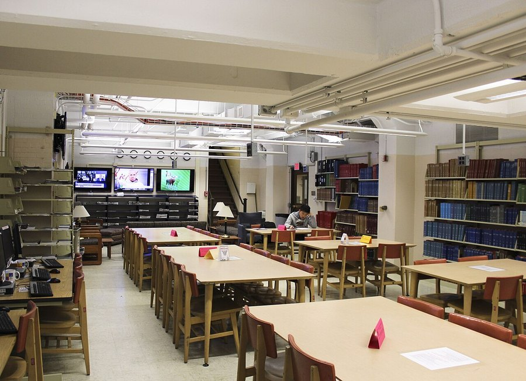

Crossword Puzzles and Dementia Risk: What the Research Says
Doing the daily crossword feels like it must be doing something for your brain. Here's what long-running studies on word puzzles and cognitive aging actually found, and what they can't tell you.

Key takeaways
- Regular solvers score better on attention and word-retrieval tests than non-solvers of the same age, in observational studies.
- Crosswords mostly train crosswords. The skill gain is real but fairly specific to vocabulary and word retrieval.
- Who keeps solving puzzles matters. People already declining cognitively may quietly drop the habit first, which can inflate the apparent benefit.
- Frequency and years of practice seem to matter more than any single session.
- Pairing puzzles with social and physical activity covers more ground than word puzzles alone.
Short answer: people who do crosswords regularly tend to age cognitively a bit better than people who don't, at least on tests of vocabulary, attention and word retrieval. Whether the puzzle itself deserves the credit is harder to pin down, because the same personality traits and habits that lead someone to a lifetime of crosswords may also protect the brain on their own.
What does the research on crosswords and dementia actually show?
Several long-running cohort studies, including a large UK research effort that tracks online puzzle habits in older adults, have repeatedly found that people who solve word puzzles like crosswords score better on tests of short-term memory and attention than non-puzzlers of similar age and education. Some of these studies describe the difference in terms of "brain age," suggesting regular solvers perform more like a younger comparison group on certain tasks.
That's a genuinely interesting, repeated finding. It is not, however, proof that crosswords caused the difference. These are observational studies: researchers watch what people already do and measure outcomes, rather than randomly assigning some people to solve puzzles and others not to. Real experiments of that kind are hard to run for years at a time, so the field leans heavily on this weaker, correlational type of evidence.
Do crosswords just make you better at crosswords?
This is the sharpest, most important criticism of puzzle research, and it has real teeth. Cognitive training studies, across many types of "brain games," consistently find that people get measurably better at the specific task they practice. What's much less consistent is whether that improvement spreads to unrelated skills.
Crosswords are likely to sharpen a fairly specific set of abilities: vocabulary, spelling, and quick retrieval of words you already know but can't always summon on demand. If you've ever needed a beat to recall a word mid-sentence, that's a retrieval problem, not a knowledge gap, and it's exactly the kind of moment our piece on the tip-of-the-tongue phenomenon covers in more depth. Crosswords give that retrieval system regular practice. Whether that translates into remembering where you left your keys or what you had for lunch yesterday is a separate question, and the evidence there is thinner.
Could the people who keep solving puzzles simply be different?
Yes, and this is the central limitation researchers wrestle with. There's a real possibility that early, undetected cognitive decline makes puzzles feel harder or less enjoyable years before any diagnosis shows up. A person quietly losing some verbal fluency might put the crossword down without realizing why, long before symptoms are obvious to anyone else. At scale, that pattern alone could produce a lot of the difference researchers see between solvers and non-solvers, even if the puzzle itself did nothing.
Education, income, and general lifestyle also travel together with puzzle habits. People who do the daily crossword may also read more, socialize more, or have had more years of formal schooling, any of which independently supports cognitive health. Good studies try to adjust for these factors statistically, and a protective association tends to survive, just smaller than the headline numbers suggest.
COMPLEX
The memory formula we rate highest in 2026
Word puzzles exercise retrieval; the right nutrients support the underlying systems. One formula combines citicoline, bacopa, phosphatidylserine and B-vitamins in a fully transparent, clinically-dosed label with a 60-day guarantee.
See Today's Price →Are crosswords better than other brain games?
Not clearly, and probably not the right way to frame it. Crosswords lean on verbal fluency and word retrieval. Sudoku and number puzzles lean on logic and pattern recognition. Strategy games like chess demand planning and working memory across a shifting board. Each exercises a somewhat different part of cognition, and none has been shown in head-to-head comparisons to be reliably superior for long-term brain health. Our related look at chess and cognitive decline covers the same question from the strategy-game side, with a nearly identical bottom line.
Rather than hunting for the single best puzzle, mixing types is a reasonable, evidence-consistent approach. Solve crosswords for the verbal workout, add a spatial or logic puzzle occasionally, and treat both as one part of a broader set of habits rather than a stand-alone solution.
How much crossword-solving would actually matter?
Nobody has established a confirmed minimum dose. The studies that find a meaningful association almost always involve people solving puzzles daily or close to it, sustained over years, not an occasional weekend attempt. If you enjoy crosswords, doing them often and for a long time is more consistent with the pattern researchers observe than doing them sporadically.
Difficulty may matter too, though this is less studied. A puzzle that no longer challenges you is unlikely to be doing much cognitive work. Stepping up to harder puzzles as you improve keeps the task demanding, which fits the general principle behind cognitive reserve better than repeating an easy one you can solve on autopilot.
A sensible way to use crosswords for brain health
Keep doing them if you enjoy them, and do them often. Push toward slightly harder puzzles as the easy ones stop feeling like work. But don't treat a daily crossword as your entire brain-health plan. Combine it with regular movement, consistent sleep, and real social contact, all of which have separate, stronger evidence behind them. Our guide to how to improve your memory lays out the full list, with word puzzles as one useful habit among several rather than the centerpiece.
If word-finding trouble is showing up outside of puzzles too, like struggling for names or common words in daily conversation more than it used to feel, that's worth mentioning to a doctor. Our overview of early signs of cognitive decline can help you tell an ordinary slip from something worth a checkup.
Frequently asked questions
Do crossword puzzles really lower dementia risk?
Regular solvers tend to score better on attention and word-retrieval tests than non-solvers of the same age. That's a real, repeated finding, but it doesn't prove crosswords alone prevent dementia, since who keeps solving puzzles may itself be part of the story.
Do crosswords just make you better at crosswords?
To a meaningful degree, yes. Cognitive training research finds people improve most at the specific task practiced, and that gain doesn't always transfer to unrelated skills. Crosswords likely sharpen vocabulary and retrieval more than general cognition.
How often should you do crosswords for a brain benefit?
Studies linking puzzles to better scores usually involve daily or near-daily solvers over years. There's no confirmed minimum, but occasional puzzling is unlikely to match that pattern.
Are crosswords better than other brain games?
Not clearly. Crosswords train verbal fluency specifically, while games like chess or sudoku train planning or logic. No single type has been shown to be superior, so variety is a reasonable approach.
Give your brain more to work with
Word puzzles are one useful habit among several. See the memory formulas our editors rate highest for 2026.
See the Top 5 Memory Formulas →Related: Chess and cognitive decline · Tip-of-the-tongue: why words vanish · Brain games for adults · Best memory formulas of 2026